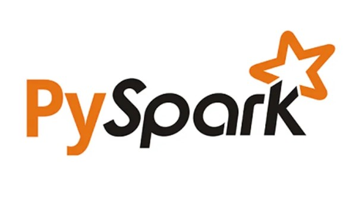
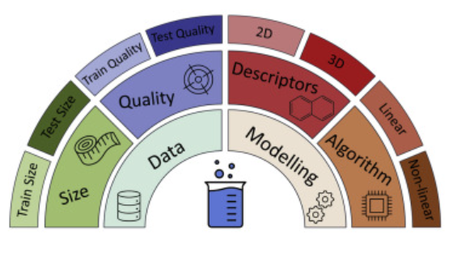

In this project, we harness the capabilities of PySpark in Python for comprehensive data manipulation tasks. Our focus is on working with auction data to extract valuable insights and facilitate efficient data handling.

In this project, we employ the Delaney Solubility model to predict the "logS" variable through Machine Learning.

In this project, we leverage the prowess of Python-based machine learning techniques to predict income levels with exceptional precision and accuracy.

In this project, we harness the power of machine learning techniques in Python to forecast house prices with precision and accuracy.